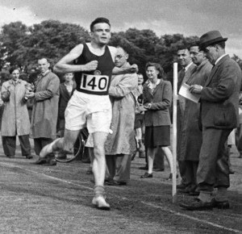

Μετά το σχολείο γίνεται δεκτός στο Βασιλικό Κολλέγιο (King's College) του Πανεπιστημίου του Κέιμπριτζ, όπου σπουδάζει μαθηματικά, με καθηγητές, μεταξύ άλλων, τον μαθηματικό και οικονομολόγο Τζον Μέιναρντ Κέινς και τον συγγραφέα Ε. Μ. Φόρστερ. Το 1936 δημοσιεύει την πραγματεία «On Computable Numbers, with an Application to the Entscheidungsproblem», που αναγνωρίζεται ως το λαμπρότερο έργο του. Στο άρθρο αυτό αποδεικνύει ότι υπάρχουν ορισμένα μαθηματικά προβλήματα που δεν μπορούν να επιλυθούν δια μιας σταθεράς, καθορισμένης διεργασίας, την οποία χαρακτήριζε ως διεργασία που μπορεί να εκτελεστεί από αυτόματη μηχανή. Αποδείκνυε, ακόμη, τη δυνατότητα κατασκευής μιας μηχανής γενικής χρήσης («Μηχανή Τούρινγκ»), θα μπορούσε να εκτελέσει το έργο οποιασδήποτε κατασκευασμένης για την επίλυση ειδικών προβλημάτων μηχανής. Αυτή ιδέα αποτέλεσε τη θεωρητική βάση για τους ηλεκτρονικούς υπολογιστές, που εμφανίστηκαν τη δεκαετία του '40.
Fig.1 - Alan Turing.
Fig.2 - Alan Turing with Friends.

Fig.3 - Alan Turing at School.
Γεννήθηκε στη συνοικία Πάντιγκτον του Λονδίνου στις 23 Ιουνίου 1912.
Ο πατέρας του ήταν υπάλληλος στη βρετανική αποικιοκρατική διοίκηση στην Ινδία κι επέστρεψε με τη σύζυγό του
Έθελ στο Λονδίνο, επειδή ήθελαν να μεγαλώσουν τα παιδιά τους στη Μεγάλη Βρετανία.
Όμως, η δουλειά του πατέρα του απαιτούσε να βρίσκεται για μεγάλα χρονικά διαστήματα στην Ινδία
κι έτσι τα δύο παιδιά του ζεύγους Τούρινγκ μεγάλωσαν με φίλους της οικογένειας στην Αγγλία,
προκειμένου να μην διακινδυνεύσει η υγεία τους στις αποικίες.